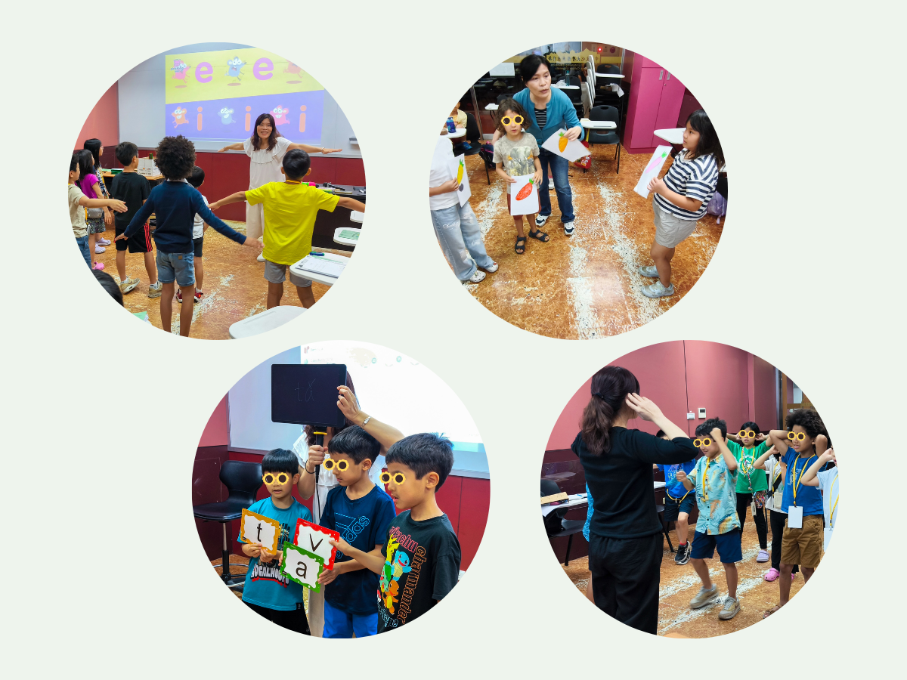
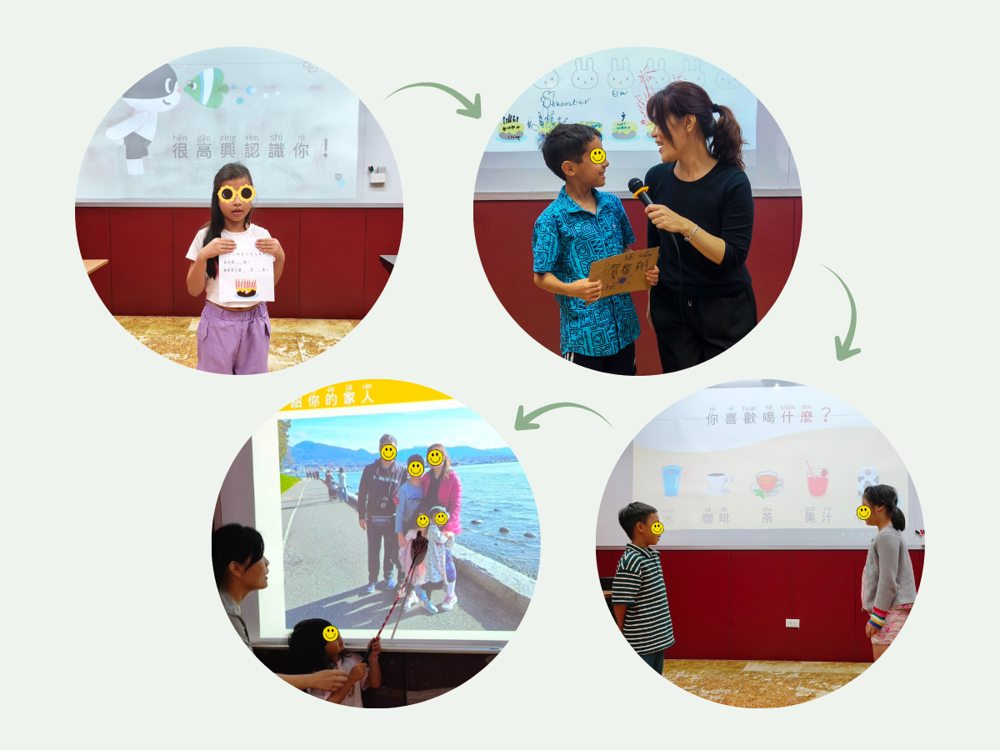
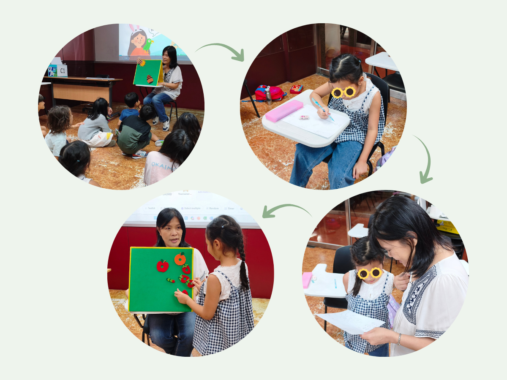
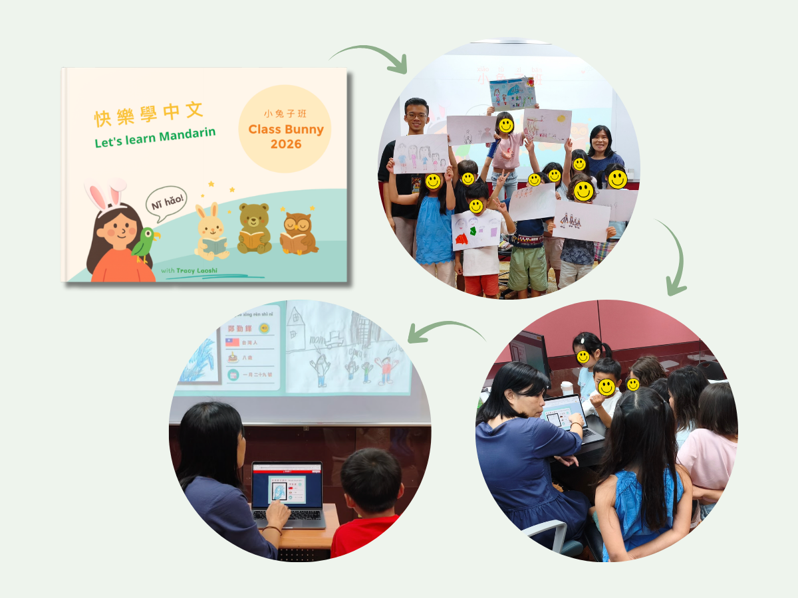
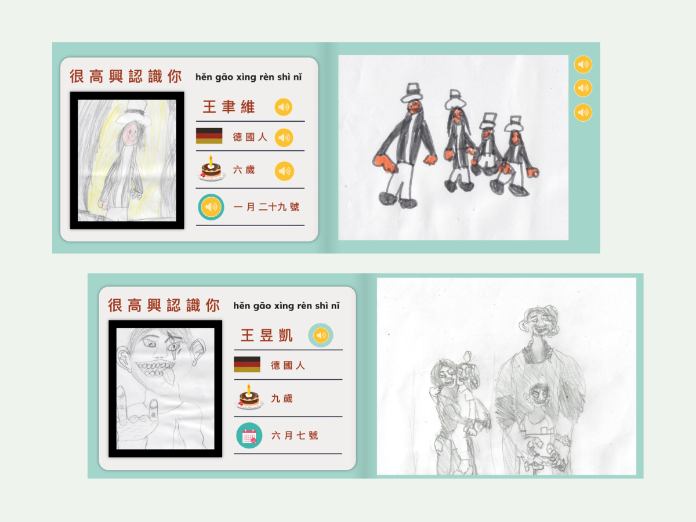
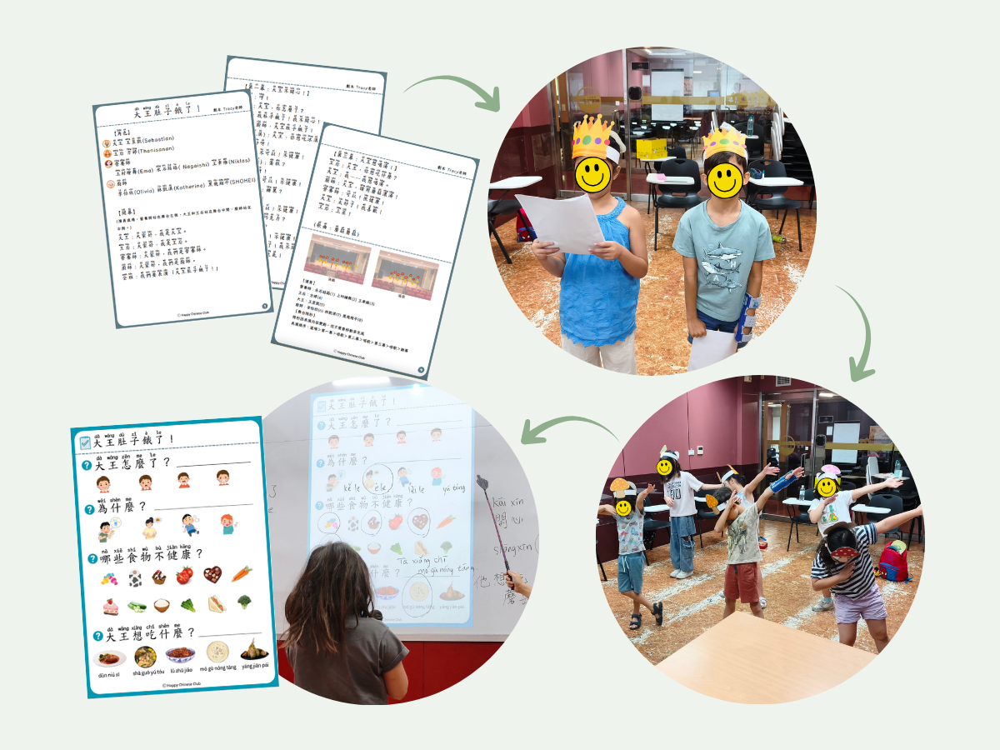
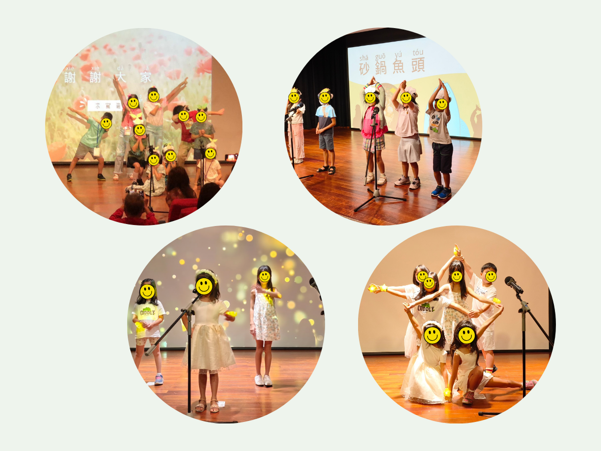

Kids Mandarin Summer Camp
Mandarin Teacher
Chinese Culture University · Division of Continuing Education · Taipei, Taiwan
Designed and delivered three-week intensive Mandarin immersion programmes for multinational beginner learners aged 6–9. The curriculum combined stories, songs, games, TPR and structured speaking activities with two culminating projects: a collaborative Book Creator eBook built from a teacher-designed template, through which students contributed original drawings and voice recordings; and an original Mandarin musical showcase integrating storytelling, music and movement.
Learning was progressively scaffolded from supported listening and speaking to personal expression, oral retelling and performance. Daily ClassDojo updates and portfolio sharing provided families with ongoing visibility into student learning.

Learning through Stories, Songs & Games
Songs, TPR, stories and classroom games provided repeated exposure to new vocabulary and sentence patterns in an immersive learning environment.

Structured Opportunities to Speak
Role-play, Turn-and-Talk and Show-and-Tell gave students regular opportunities to use Mandarin for meaningful classroom communication.

Story Comprehension & Oral Retelling
Students moved from shared story listening to individual drawing, teacher conferencing and oral retelling, with support adjusted to individual language proficiency.

Collaborative eBook Project
Using a teacher-designed Book Creator template, students contributed voice recordings and original drawings to a shared class eBook. The project gave beginner learners a clear structure for speaking while also allowing individual creativity through their artwork and the experience of contributing to a collective class product.

Student Work
Students completed a structured “All About Me” speaking task using language learned during the first two weeks of the programme. Using the same Book Creator template, oral output was differentiated according to age and language proficiency, while students added their own drawings to personalise their contribution.

Scaffolded Performance Project
I scripted each performance around the language level of the class, often using a Mandarin song as the starting point for the story. Students first built understanding through story work, vocabulary and speaking activities, then practised dialogue and songs, retold key parts of the story, and finally performed on stage. The sequence was designed so that performance grew from understanding rather than script memorisation.

Performance Outcomes across Three Summer Programmes
Final performances formed a recurring learning outcome across the three summer programmes, giving beginner learners a concrete purpose for practising spoken Mandarin and an opportunity to present their learning to an audience.